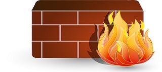

SEGURIDAD INFORMATICA-LECTURAS
- Inicio
- MATERIAL DE LECTURA
NORMAS EN LA SEGURIDAD DE REDES
La seguridad en redes no es más que mecanismos ya sea hardware o software que se encarga de filtrar a los usuarios o programas que quieran interferir ya sea con la integridad de la red o con la información que se encuentra en esta. ¿Para qué sirven? • Los sistemas de seguridad sirven para, como se mencionó antes, proteger a las computadoras conectadas en una red de tal manera que solo se pueda utilizar de una forma segura en la cual los usuarios puedan comunicarse de manera que no salgan los datos a lugares no deseados y se puedan procesar solo en un orden deseado por el administrador de dicha cuenta para poder lograr esto se requieren de varios pasos a seguir y distintos niveles de seguridad. De los cuales se hablara a continuación.
